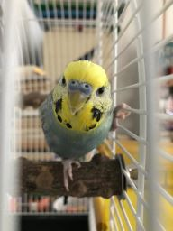

Merel Balk
Yep

Naam en achtergrond
Hallo daar! Ik ben Merel, 22 jaar oud. Ik kom uit Amsterdam en woon hier mijn hele leven al. Ik ben niet erg goed in voorstelrondjes. Ik zat op het Vossius Gymnasium op de middelbare school en heb de universiteit geprobeerd, maar dat was niet mijn ding.Waarom deze opleiding
Ik vond programmeren al jaren erg leuk (al reiken mijn skills slechts tot simpele websites) en besloot daarom deze opleiding te gaan doen! Mijn vader is (ook?) programmeur en ik vond het altijd fascinerend om met hem mee te kijken als hij aan het werk was en probeerde dat dan over te nemen. Ik vond het enorm leuk om te doen tot... Zoals met veel mijn hobby's het geval was, de middelbare school toesloeg en iedereen zo bezig was met altijd maar moeten bewijzen beter te zijn dan de rest, ik het een beetje had opgegeven. Maar sinds lockdown had ik het weer opgepakt en realiseerde dat dit daadwerkelijk iets is waar ik meer over wil leren en uiteindelijk werk in zou willen vinden!Molly
Ik houd erg veel van mijn vogel,
Molly.

Molly
is intussen een al twee jaar oude grasparkiet met zijn eigen willetje! Hij houdt erg veel van sla, meezingen met de radio en kusjes op zijn snaveltje.
Andere interesses
Ik houd ook van gamen (wow, wat een cliche). Voormamelijk Stardew Valley, Overwatch en Animal Crossing, maar wanneer ik de tijd heb om er even voor te gaan zitten als ik zin heb ook Skyrim, Borderlands, Life is Strange etc. Groot fan van Britse comedy panelshows, voornamelijk
QI
en the
Quite interesting! Het is een Quiz die Stephen Fry tot en met seizoen 13 (M) presenteerde en die vanaf toen werd overgenomen door Sandi Toksvig, die eerder al regelmatig te gast was als deelnemer. Verder zit de comedian Alan Davies er als vaste gast in samen met drie andere comedians (en soms andere soorten beroemdheden, zoals Carrie Fischer). Het vermakelijke van de show is dat de daadwerkelijke antwoorden op de vragen zelden dat zijn wat je verwacht, aangevuld met random leuke feitjes!
The Big Fat Quiz
, maar dingen als Mock The Week en dergelijken vind ik ook erg vermakelijk als iik er langs kom.
Enorm herkijkbaar. Bij deze quiz, die aan het eind van het jaar wordt uitgezonden op channel 4 in Groot Britannie (dus helaas is dat wachten tot iemand het upload op youtube voor mij), krijgen we al sinds 2004 een big fat quiz of the year en sinds wat jaren later ook regelmatig een big fat quiz of everyting een paar weken (of maanden) erna. Deze quiz wordt al sinds het begin gepresenteerd door Jimmy Carr en heeft zes gast-comedians die in teams van twee vragen over het afgelopen jaar (of algemene) vragen proberen te beantwoorden (and trying, and often succeeding, to be funny in the process). De meest klassieke teams zijn Noel Fielding en Richard Ayoade die jaren samen teams hebben gevormd, even als Noel Fielding en Russel Grant, die in 2007 the goth detectives vormden terwijl ze het grootste deel van de vragen verkeerd beantwoordden.
Ook fan van musicals, voornamelijk
Starkid
Deze toneelgroep, die al sinds... Als ik het goed heb 2008 hun musicals post op youtube, zijn te makers van meesterwerken zoals "a very potter musical", "a very potter sequal" en "a very potter senior year". Ook veel eigen werk, maar de originele "a very potter musical" is wat hun populair heeft gemaakt. Mijn persoonlijke favoriet is "the guy who didn't like musicals" door de enorm droge humor.
Als een oud-docent me zou beschrijven is het waarschijnlij k een "ze was een ietwat oververmoeide leerling met mediocre cijfers".